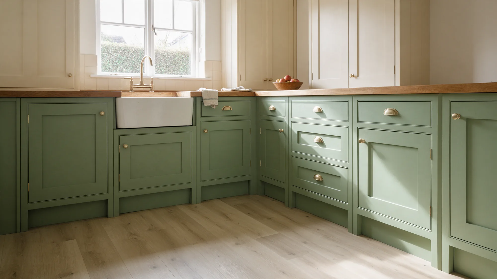
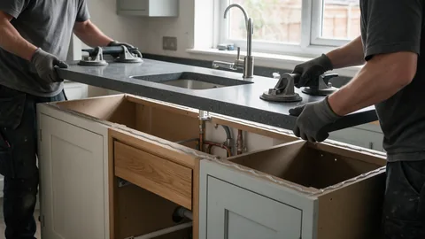
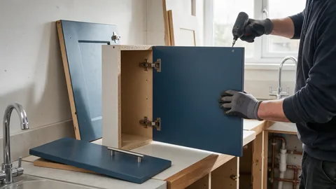
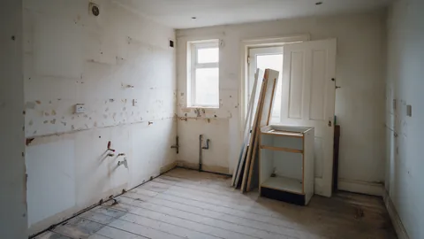
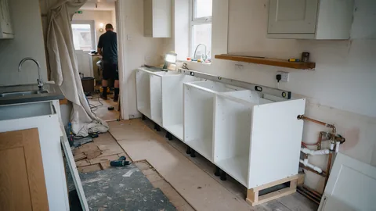
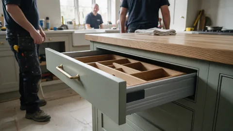
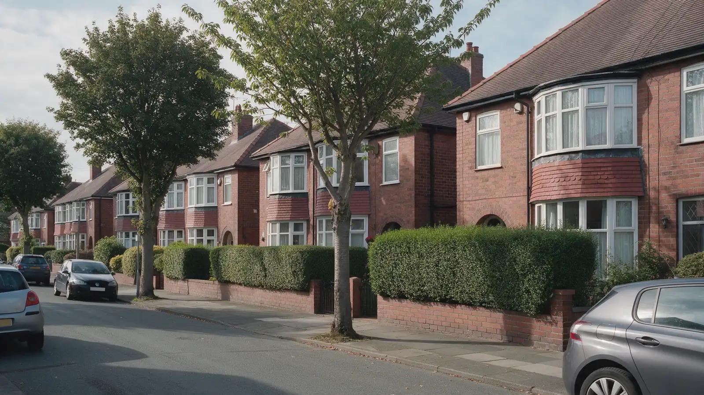

Kitchen fitters · Wirral
A kitchen that fits
the room it is in.
Full fits, new doors on sound units, worktops, appliances and utility rooms. Same faces in the house every day, and the floor swept before we go home.
What we do
Six kinds of job.
 Generated photo
Generated photoFull kitchen fitting
Old kitchen out, new one in, start to finish. Units set level and scribed to the wall, worktops, sink, appliances and the floor swept behind us.
 Generated photo
Generated photoKitchen design and planning
Measured in the room with a tape, not drawn from a photograph. A layout built round how you actually use the kitchen.

Generated photoWorktops: laminate, wood and stone
Laminate, solid oak or stone, templated and fitted properly. Joints that line up and a cut out the sink actually sits in.

Generated photoDoor and worktop replacement
The same kitchen, new doors, drawer fronts, handles and worktop. Half the upheaval when the carcasses are still sound.
 Generated photo
Generated photoAppliance fitting
Ovens, dishwashers, fridges, washers and extractors fitted into the run, plumbed, tested and left working.
 Generated photo
Generated photoUtility rooms
A run of units, a deep sink and somewhere for the washer, the dryer, the coats and the hoover. Often the best space in the house.
How it works
Four steps, no mystery.
You tell us the kitchen
A call, the chat box or the form. The rough size, what is in there now, and whether you have chosen anything yet.
We come and measure
We measure the room, find where the water, the waste and the power actually are, and say what the space will and will not take.
You get a plan and a written quote
A layout to change before anything is ordered, then what we will do, what is included, what is not, and how long it should take Sample.
We fit it
Same faces every day, dust sheets down the hall, the sink back on most nights, and the kitchen handed over clean.


Illustrative, not a real job. Both pictures were generated for this demo from the same room, one before and one after, to show the kind of change a fit makes.
Before and after
Same window, same four walls.
Drag the slider. On the left, orange tinted doors, a worktop with a chipped edge by the sink and a cupboard door that has not shut properly for years. On the right, the same room with the window in the same place.
It is an illustration rather than a real job, but it is the shape of most of the kitchens we get asked about.
See the rest of the workOur work
Sample jobs.
8 jobs shown
Generated photoFull kitchen fitHeswall · sample
Generated photoStripped out, day oneBebington · sample
Generated photoCarcasses in, doors to comeNeston · sample Generated photoLevelling the base unitsWest Kirby · sampleGenerated photoStone worktop fittedHeswall · sample
Generated photoLevelling the base unitsWest Kirby · sampleGenerated photoStone worktop fittedHeswall · sample Generated photoSolid oak, oiledHoylake · sampleGenerated photoNew doors on sound carcassesBebington · sample
Generated photoSolid oak, oiledHoylake · sampleGenerated photoNew doors on sound carcassesBebington · sample
Generated photoDrawers and handlesNeston · sampleEvery job here is a made up sample with a generated picture. Tap one to see it bigger.
Where we work
Around the Wirral.
Based in the Wirral Sample. These are the towns we cover most. Coverage is a sample for this demo.

Generated photoWhat people say
Sample reviews.
Sample review
They scribed the end panel to a wall that was nowhere near straight, and I only noticed because they pointed it out. Everybody else had quoted for a filler strip.
Marie, Heswall
Sample review
We bought the kitchen ourselves and two firms would not touch it. These went through the order list with us first and found two missing panels before the start date.
Dev, Bebington
Sample review
New doors and a new worktop on the units we already had. Two days, half the upheaval, and it looks like a new kitchen.
Jan, West Kirby
Sample review
The sink went back in on the first evening with a temporary waste so we could still wash up all week. Small thing, made the whole job.
Phil, Neston
Made up for this demo. Hearthley does not exist, so neither do its customers.
Questions
What people ask us first.
Can you fit a kitchen I have bought elsewhere?
Yes, and plenty of our work is exactly that. You choose and buy the kitchen, we fit it. It makes no difference to us who supplied it.
What we do ask for is the plan and the full order list before we start. It is a lot easier to spot a missing end panel, the wrong hinge or a housing that will not take your oven on paper than on the first morning with the old kitchen already in a skip.
How long does a kitchen fit take?
Most kitchens in an ordinary house take about one to two weeks on site once the old one is out. A straight swap in the same layout is the quick end of that Sample.
What stretches it is moving the sink or the waste, plaster and floorboards that only show themselves after the strip out, and stone worktops, which get templated once the units are in and then fitted a week or so later. Your quote says how long yours should take.
Do you do the plumbing and electrics?
The fitting, the joinery, the worktops and the plumbing for the sink, the taps, the washing machine and the dishwasher are ours, so one team does the bulk of it.
Anything electrical, so a new socket, moving a cooker point or wiring an extractor, is done by a qualified electrician we work with. They are booked in at the right stage, which means before the walls and the units close everything up, not after.
Can you remove the old kitchen?
Yes, that is part of the job unless you would rather do it yourself. Some people take the old units out at the weekend before we start and it saves a bit.
It goes out with us, along with the old worktops and the flooring if that is coming up. Dust sheets go down on the route through the house, and the room is swept at the end of every day rather than at the end of the week.
Can I keep my worktops and change the doors?
Often, yes. If the carcasses are solid and square and the layout still works, new doors, drawer fronts, handles and end panels change the room for a fraction of a full fit, and your worktop can stay if it is sound.
We check the carcasses first, because there is no point hanging new doors on units that are coming apart at the corners. If that is what we find, we will tell you straight rather than take the easy job.
General guidance written for this demo, not advice on your kitchen.
Advice
Worth reading first.
Refresh or replace: when new doors are enough
Half the kitchens we are asked to replace do not need replacing. Here is how to tell which half yours is in.
Generated photoPlanning a kitchen layout that works
Most of the regret we hear about is layout, not doors. Four things decide whether a kitchen works.
What happens on each day of a kitchen fit
A week of your house in bits is easier when you know what each day looks like. This is the usual order.
About this demo
What this demo shows.
Hearthley is not a real firm. The site is here to show a kitchen fitter what Clockwork AI builds, in six parts.
No prices here. What it would cost for your firm is a conversation, not a web page. The Clockwork number is in the bar at the top.
Thinking about the kitchen?
Tell us roughly what you are after and we will come and measure the room. You get it in writing afterwards, not a number over the phone.